Amobee
Audience Builder

Amobee
What does Amobee do?
Amobee provides a demand-side platform (DSP) that enables brands or agencies to plan, activate, and optimize programmatic campaigns across channels.
At the heart of each campaign is the audience — the people brands want to reach. How audiences are defined affects who sees the ads, how they are delivered, and ultimately how efficiently budgets are spent.
Helping users reach the right audience is one of Amobee's core goals. Advertisers constantly face the challenge of delivering their message to people who actually care. Reaching the wrong audience not only reduces campaign impact, but also leads to wasted spend and inefficient performance.
Audience builder is the tool in Amobee DSP that allows advertisers to define audiences based on interests, behaviors, and other characteristics, so campaigns can be delivered to people who most likely to engage and convert across multiple channels.


We received complaints
Over time, we learned that the Audience Builder was widely perceived as unintuitive, requiring users to invest significant effort just to understand how the tool worked and ensure their audience was set up correctly.
The confusing experience and inefficient workflows introduced unnecessary friction and slowed users down, which prompted us to rethink the overall user experience and redesign the tool from the ground up.
Understand how to build an audience
Amobee provides first-party data (the advertiser's own customer data), as well as third-party data from external partners. Users can pick criteria from these data providers and mix them together to describe the audience they want to reach.
For example, if a car brand wants to run an SUV campaign targeting people who are interested in SUVs and have recently visited SUV-related websites, but excluding those who have already purchased an SUV, they would define an audience rule by combining these criteria with operators:
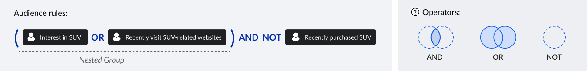
Understand user mental model
After a heuristic evaluation, my initial assumption was that users needed a tool that could help them accurately build audience rules as planned, with speed and confidence — something the poor usability of the legacy tool failed to support.
However, after speaking with users, I realized they needed more than accuracy. In many use cases, they progressively refine audience criteria and rules as they evaluate reach and make decisions throughout the journey.
Start with a high-level idea
Most of the time, users don't know the exact rule upfront. They begin with a broad concept of their target audience and select initial criteria to form a preliminary audience.
Gradually refine the audience with estimated data
Users adjust criteria or operators to narrow down or broaden the audience according to estimated reach to validate their assumptions.
Monitor performance and iterate with real data after activation
Once live, users track performance metrics and make cautious, incremental adjustments based on real data.
The Challenge
Based on users' mental models and critical UX flaws observed in the current tool, I defined 4 design principles to guide the solution and nail down the challenge
Explicit
Make audience logic visible and unambiguous
Insightful
Enable review and debugging of audience logic
Inspectable
Enable review and debugging of audience logic
Scalable
Support growing rules with complexity
Design Explorations
A solid visual foundation helps users clearly see how their changes affect audience rules during initial creation. It also enables them to quickly grasp the structure of previously built audiences when returning to iterate, reducing cognitive load and supporting efficient updates.
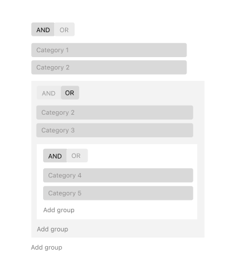
Pros:
Cons
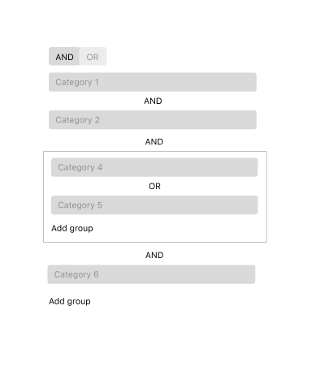
Pros:
Cons
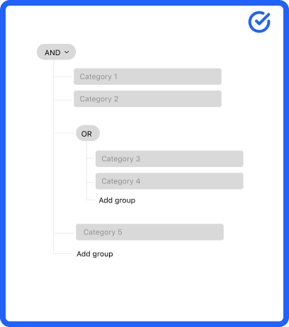
Pros:
Cons
I explored multiple options for what information to display in category cards within the rule tree, and validated them through usability testing to prioritize the information most critical for helping users build audience rules.
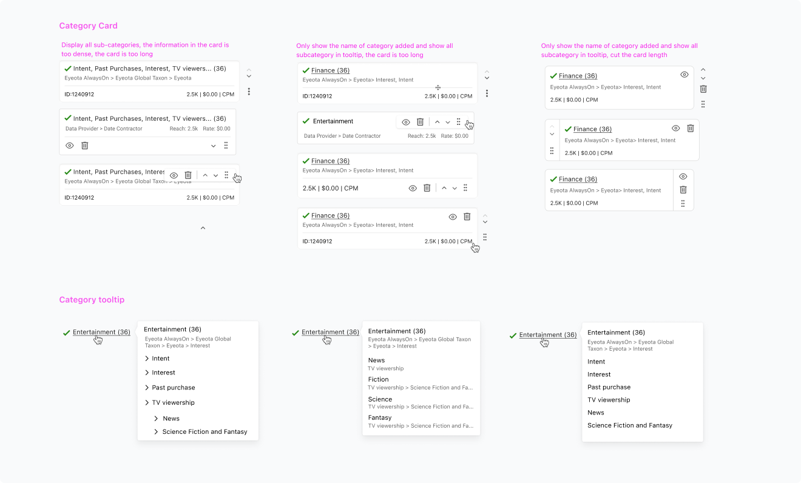
Operators can be confused. People might think 'AND' means inclusive. In contrast, it means exclusive. To help users better understand what will broaden or narrow their audiences, I used natural human language to replace the programming terms and added Venn diagrams to visually reinforce the concepts.
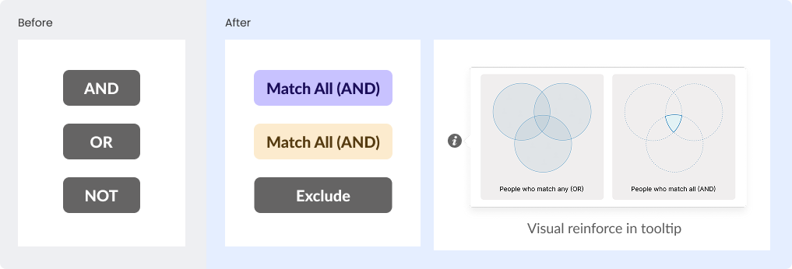
The current tool was error-prone due to excessive flexibility in freely changing operators between categories. I intentionally constrained this flexibility to help users build rules that better align with their expectations, while introducing focused flexibility to enable faster creation of nested groups.
Before
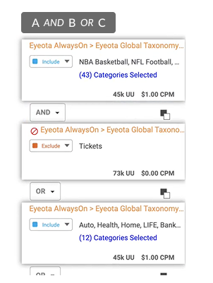
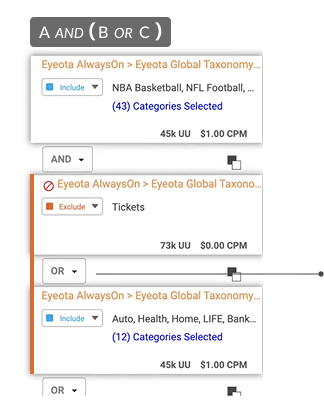
Users can freely change operators without being required to group categories, making it easy to overlook operator precedence and unintentionally create audiences that differ from their expectations.
After – Two error-resistant ways to create groups


Toggling categories on and off in the audience rules allows users to quickly play with different combinations and see how each change affects the estimated reach, without deleting and re-adding categories. This streamlines exploration during audience building and makes it easier to revisit and troubleshoot rules when iterating later.

Express audience rules in a readable format that allows users to quickly grasp what they have built. It helps them maintain an overview during constant adjustments, making it easier to understand, debug, and refine audience rules without losing context.
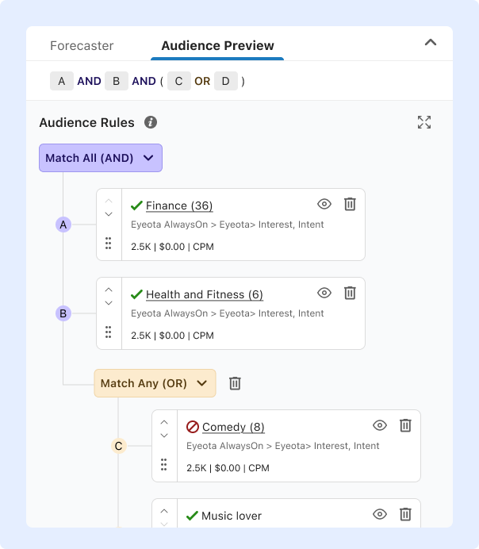
Validation
To evaluate how users perceived the new rule tree visualization, interaction patterns, and information hierarchy, I conducted moderated usability testing with five participants using a simple clickable prototype. Overall, users responded positively to the new design, finding it easier to understand and work with compared to the existing experience.
Participants found it easier to understand and manage the rules thanks to the clear visual hierarchy, allowing them to quickly see what they had built.
Participants appreciated the ability to toggle categories on and off, helping them quickly decide which rules to keep or remove.
But... I also observed that users needed extra effort to translate the color to corresponding logic, which introduced more mental effort.
Iterations
To reduce cognitive load while keeping the logic tree easy to scan and understand, I removed color from the nodes and reserved it only for the logic switcher. I also added clear text labels between nodes to make logical relationships more explicit and improve scannability.
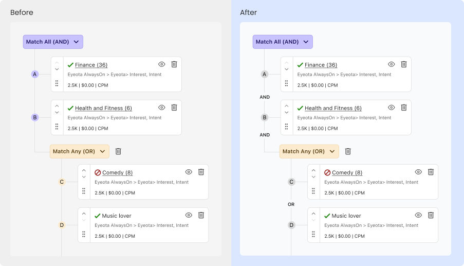
During implementation, developers raised concerns that the floating "Add group" button would be difficult to implement. Given that deeply nested groups make it hard for users to quickly locate the correct add action, I moved the button next to the operator switcher and introduced a new "Branch" icon to better convey its purpose.
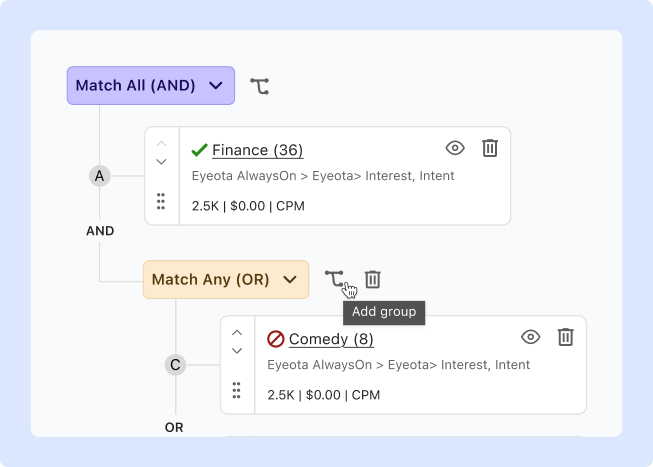
Impact
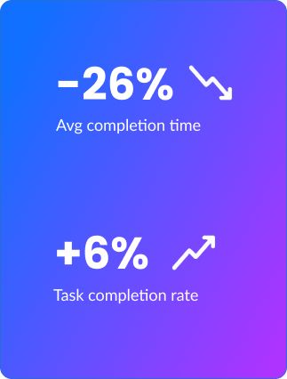
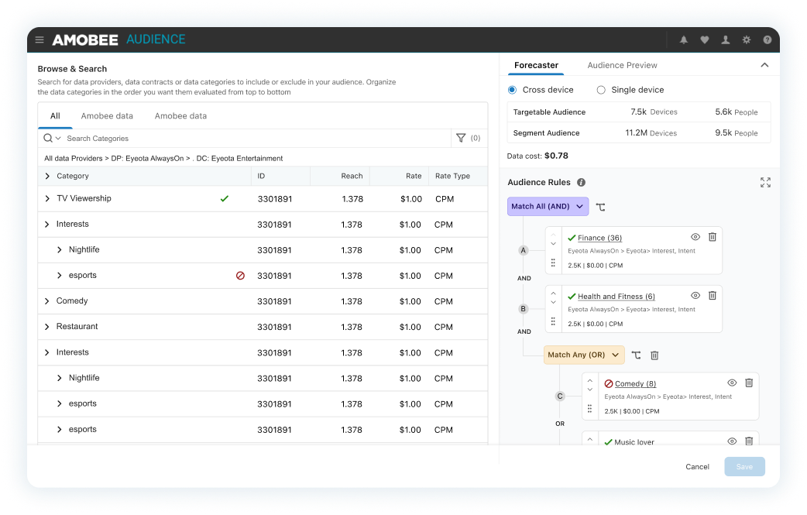
Key learning
A successful design should balance flexibility with the right constraints.
Designing complex experiences is not about giving users unlimited flexibility. In fact, too much freedom without guidance often leads to confusion and silent errors. A successful design should balance flexibility with the right constraints, empowering users to build advanced logic while guiding them away from common mistakes. Thoughtful guardrails, clear structure, and intentional interactions are essential to helping users work with confidence and precision.